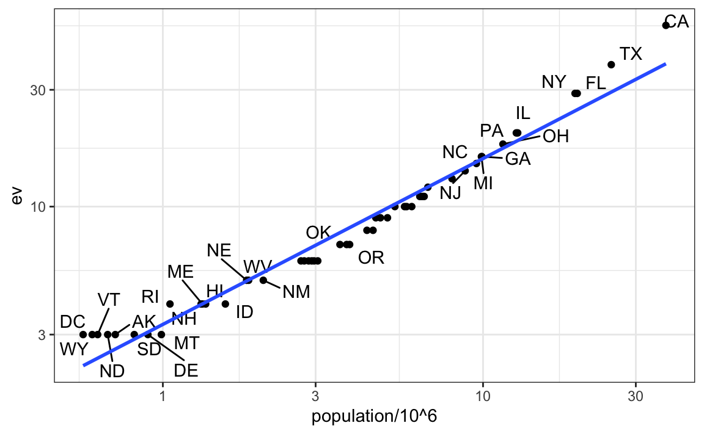

library(tidyverse)
library(dslabs)
head(murders)
#> state abb region population total
#> 1 Alabama AL South 4779736 135
#> 2 Alaska AK West 710231 19
#> 3 Arizona AZ West 6392017 232
#> 4 Arkansas AR South 2915918 93
#> 5 California CA West 37253956 1257
#> 6 Colorado CO West 5029196 65Joining Tables
Joining tables
The information we need for a given analysis may not be just in one table.
Here we use a simple examples to illustrate the general challenge of combining tables.
Suppose we want to explore the relationship between population size for US states and electoral votes.
We have the population size in this table:
Joining tables
- and electoral votes in this one:
head(results_us_election_2016)
#> state electoral_votes clinton trump others
#> 1 California 55 61.7 31.6 6.7
#> 2 Texas 38 43.2 52.2 4.5
#> 3 Florida 29 47.8 49.0 3.2
#> 4 New York 29 59.0 36.5 4.5
#> 5 Illinois 20 55.8 38.8 5.4
#> 6 Pennsylvania 20 47.9 48.6 3.6- Just concatenating these two tables together will not work since the order of the states is not the same.
identical(results_us_election_2016$state, murders$state)
#> [1] FALSE- The join functions, described below, are designed to handle this challenge.
Joins
The join functions in the dplyr package make sure that the tables are combined so that matching rows are together.
If you know SQL, you will see that the approach and syntax is very similar.
The general idea is that one needs to identify one or more columns that will serve to match the two tables.
Then a new table with the combined information is returned.
Notice what happens if we join the two tables above by state using
left_join(we will remove theotherscolumn and renameelectoral_votesso that the tables fit on the page):
Joins
tab <- left_join(murders, results_us_election_2016, by = "state") |>
select(-others) |> rename(ev = electoral_votes)
head(tab)
#> state abb region population total ev clinton trump
#> 1 Alabama AL South 4779736 135 9 34.4 62.1
#> 2 Alaska AK West 710231 19 3 36.6 51.3
#> 3 Arizona AZ West 6392017 232 11 45.1 48.7
#> 4 Arkansas AR South 2915918 93 6 33.7 60.6
#> 5 California CA West 37253956 1257 55 61.7 31.6
#> 6 Colorado CO West 5029196 65 9 48.2 43.3- The data has been successfully joined and we can now, for example, make a plot to explore the relationship:
Joins

Joins
We see the relationship is close to linear with about 2 electoral votes for every million persons, but with very small states getting higher ratios.
In practice, it is not always the case that each row in one table has a matching row in the other.
For this reason, we have several versions of join.
To illustrate this challenge, we will take subsets of the tables above.
We create the tables
tab1andtab2so that they have some states in common but not all:
Joins
tab_1 <- slice(murders, 1:6) |> select(state, population)
tab_2 <- results_us_election_2016 |>
filter(state %in% c("Alabama", "Alaska", "Arizona",
"California", "Connecticut", "Delaware")) |>
select(state, electoral_votes) |> rename(ev = electoral_votes) - We will use these two tables as examples in the next sections.
Left join
Suppose we want a table like
tab_1, but adding electoral votes to whatever states we have available.For this, we use
left_joinwithtab_1as the first argument.We specify which column to use to match with the
byargument.
left_join(tab_1, tab_2, by = "state")
#> state population ev
#> 1 Alabama 4779736 9
#> 2 Alaska 710231 3
#> 3 Arizona 6392017 11
#> 4 Arkansas 2915918 NA
#> 5 California 37253956 55
#> 6 Colorado 5029196 NA- Note that
NAs are added to the two states not appearing intab_2.
Left join
- Also, notice that this function, as well as all the other joins, can receive the first arguments through the pipe:
tab_1 |> left_join(tab_2, by = "state") Right join
- If instead of a table with the same rows as first table, we want one with the same rows as second table, we can use
right_join:
tab_1 |> right_join(tab_2, by = "state")
#> state population ev
#> 1 Alabama 4779736 9
#> 2 Alaska 710231 3
#> 3 Arizona 6392017 11
#> 4 California 37253956 55
#> 5 Connecticut NA 7
#> 6 Delaware NA 3- Now the NAs are in the column coming from
tab_1.
Inner join
If we want to keep only the rows that have information in both tables, we use
inner_join.You can think of this as an intersection:
inner_join(tab_1, tab_2, by = "state")
#> state population ev
#> 1 Alabama 4779736 9
#> 2 Alaska 710231 3
#> 3 Arizona 6392017 11
#> 4 California 37253956 55Full join
If we want to keep all the rows and fill the missing parts with NAs, we can use
full_join.You can think of this as a union:
full_join(tab_1, tab_2, by = "state")
#> state population ev
#> 1 Alabama 4779736 9
#> 2 Alaska 710231 3
#> 3 Arizona 6392017 11
#> 4 Arkansas 2915918 NA
#> 5 California 37253956 55
#> 6 Colorado 5029196 NA
#> 7 Connecticut NA 7
#> 8 Delaware NA 3Semi join
The
semi_joinfunction lets us keep the part of first table for which we have information in the second.It does not add the columns of the second:
semi_join(tab_1, tab_2, by = "state")
#> state population
#> 1 Alabama 4779736
#> 2 Alaska 710231
#> 3 Arizona 6392017
#> 4 California 37253956Anti join
The function
anti_joinis the opposite ofsemi_join.It keeps the elements of the first table for which there is no information in the second:
anti_join(tab_1, tab_2, by = "state")
#> state population
#> 1 Arkansas 2915918
#> 2 Colorado 5029196The following diagram summarizes the above joins:
 .
.(Image courtesy of RStudio1.
Anti join
CC-BY-4.0 license2.
Cropped from original.).
Binding
Although we have yet to use it in this book, another common way in which datasets are combined is by binding them.
Unlike the join function, the binding functions do not try to match by a variable, but instead simply combine datasets.
If the datasets don’t match by the appropriate dimensions, one obtains an error.
Binding columns
The dplyr function bind_cols binds two objects by making them columns in a tibble.
For example, we quickly want to make a data frame consisting of numbers we can use.
bind_cols(a = 1:3, b = 4:6)
#> # A tibble: 3 × 2
#> a b
#> <int> <int>
#> 1 1 4
#> 2 2 5
#> 3 3 6This function requires that we assign names to the columns.
Here we chose
aandb.Note that there is an R-base function
cbindwith the exact same functionality.
Binding columns
An important difference is that
cbindcan create different types of objects, whilebind_colsalways produces a data frame.bind_colscan also bind two different data frames.For example, here we break up the
tabdata frame and then bind them back together:
tab_1 <- tab[, 1:3]
tab_2 <- tab[, 4:6]
tab_3 <- tab[, 7:8]
new_tab <- bind_cols(tab_1, tab_2, tab_3)
head(new_tab)
#> state abb region population total ev clinton trump
#> 1 Alabama AL South 4779736 135 9 34.4 62.1
#> 2 Alaska AK West 710231 19 3 36.6 51.3
#> 3 Arizona AZ West 6392017 232 11 45.1 48.7
#> 4 Arkansas AR South 2915918 93 6 33.7 60.6
#> 5 California CA West 37253956 1257 55 61.7 31.6
#> 6 Colorado CO West 5029196 65 9 48.2 43.3Binding by rows
- The
bind_rowsfunction is similar tobind_cols, but binds rows instead of columns:
tab_1 <- tab[1:2,]
tab_2 <- tab[3:4,]
bind_rows(tab_1, tab_2)
#> state abb region population total ev clinton trump
#> 1 Alabama AL South 4779736 135 9 34.4 62.1
#> 2 Alaska AK West 710231 19 3 36.6 51.3
#> 3 Arizona AZ West 6392017 232 11 45.1 48.7
#> 4 Arkansas AR South 2915918 93 6 33.7 60.6- This is based on an R-base function
rbind.
Set operators
Another set of commands useful for combining datasets are the set operators.
When applied to vectors, these behave as their names suggest.
Examples are
intersect,union,setdiff, andsetequal.However, if the tidyverse, or more specifically dplyr, is loaded, these functions can be used on data frames as opposed to just on vectors.
Intersect
- You can take intersections of vectors of any type, such as numeric:
intersect(1:10, 6:15)
#> [1] 6 7 8 9 10- or characters:
intersect(c("a","b","c"), c("b","c","d"))
#> [1] "b" "c"The dplyr package includes an
intersectfunction that can be applied to tables with the same column names.This function returns the rows in common between two tables.
Intersect
- To make sure we use the dplyr version of
intersectrather than the base R version, we can usedplyr::intersectlike this:
tab_1 <- tab[1:5,]
tab_2 <- tab[3:7,]
dplyr::intersect(tab_1, tab_2)
#> state abb region population total ev clinton trump
#> 1 Arizona AZ West 6392017 232 11 45.1 48.7
#> 2 Arkansas AR South 2915918 93 6 33.7 60.6
#> 3 California CA West 37253956 1257 55 61.7 31.6Union
Similarly union takes the union of vectors.
For example:
union(1:10, 6:15)
#> [1] 1 2 3 4 5 6 7 8 9 10 11 12 13 14 15
union(c("a","b","c"), c("b","c","d"))
#> [1] "a" "b" "c" "d"- The dplyr package includes a version of
unionthat combines all the rows of two tables with the same column names.
tab_1 <- tab[1:5,]
tab_2 <- tab[3:7,]
dplyr::union(tab_1, tab_2)
#> state abb region population total ev clinton trump
#> 1 Alabama AL South 4779736 135 9 34.4 62.1
#> 2 Alaska AK West 710231 19 3 36.6 51.3
#> 3 Arizona AZ West 6392017 232 11 45.1 48.7
#> 4 Arkansas AR South 2915918 93 6 33.7 60.6
#> 5 California CA West 37253956 1257 55 61.7 31.6
#> 6 Colorado CO West 5029196 65 9 48.2 43.3
#> 7 Connecticut CT Northeast 3574097 97 7 54.6 40.9setdiff
The set difference between a first and second argument can be obtained with
setdiff.Unlike
intersectandunion, this function is not symmetric:
setdiff(1:10, 6:15)
#> [1] 1 2 3 4 5
setdiff(6:15, 1:10)
#> [1] 11 12 13 14 15- As with the functions shown above, dplyr has a version for data frames:
tab_1 <- tab[1:5,]
tab_2 <- tab[3:7,]
dplyr::setdiff(tab_1, tab_2)
#> state abb region population total ev clinton trump
#> 1 Alabama AL South 4779736 135 9 34.4 62.1
#> 2 Alaska AK West 710231 19 3 36.6 51.3setequal
Finally, the function
setequaltells us if two sets are the same, regardless of order.So notice that:
setequal(1:5, 1:6)
#> [1] FALSE- but:
setequal(1:5, 5:1)
#> [1] TRUE- The dplyr version checks whether data frames are equal, regardless of order of rows or columns:
dplyr::setequal(tab_1, tab_2)
#> [1] FALSEJoining with data.table
The data.table package includes
merge, a very efficient function for joining tables.In tidyverse we joined two tables with
left_join:
tab <- left_join(murders, results_us_election_2016, by = "state") - In data.table the
mergefunctions works similarly:
library(data.table)
tab <- merge(murders, results_us_election_2016, by = "state", all.x = TRUE) Joining with data.table
- Instead of defining different functions for the different type of joins,
mergeuses the the logical argumentsall(full join),all.x(left join), andall.y(right join).